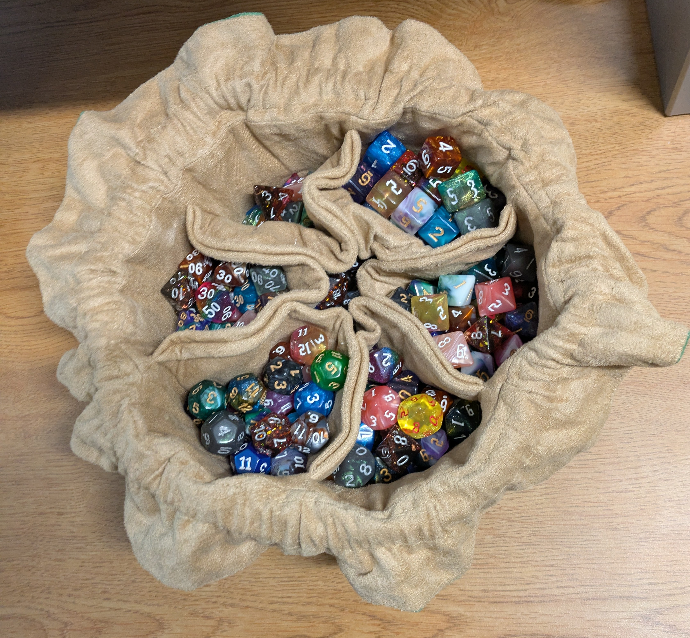
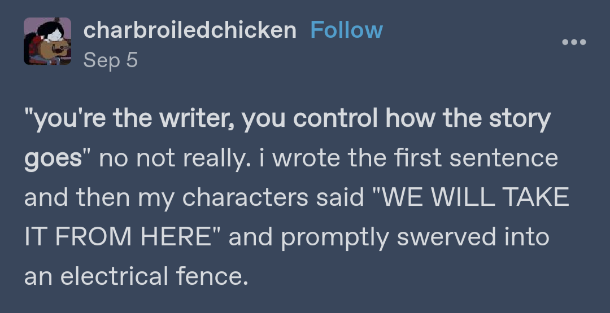

Dungeons and Dragons:
I enjoy playing Dungeons and Dragons, as well as other TTRPGs (table-top role-playing games) with my friends. My favorite part is the collaborative storytelling and the way we bounce ideas and jokes off each other until we're all laughing. I also really love the dice-collecting aspect of the game, because who doesn't love the shiny math rocks? For reference, here's a photo of just part of my dice collection!
Writing:
I also love creative writing. I've worked on a number of smaller projects, but for the past couple of years I've actually been working on a book! It's mostly been a passion project, but I do hope to one day get it published. The picture next to this pretty much sums up the journey this book has taken me on haha!
Movies:
One of my favorite things to do in my free time is watch movies and TV shows. My current favorite movie is Everything Everywhere All At Once (the movie from the picture next to this text), but other top contenders are Interstellar, Arrival, the Dune movies, and Captain America: The Winter Soldier. My current favorite TV show is Andor, especially season 2.
Music:
I listen to a lot of music, mostly scores from movies. I like the way they tell a story and make you feel things just from the arrangement of sounds. My favorite film composer is Hans Zimmer, but John Williams is a very close second. My favorite movie score of all time is probably the score to Interstellar. The picture for this section is of the pipe organ used to record that soundtrack!
Coding:
Of course, I also enjoy coding! I don't do too much of it in my free time, unless an idea really seizes me, but I love the figuring out the logic and problem-solving that comes with a project. I knew as soon as I got into coding in middle/high school that I wanted to make it my career.